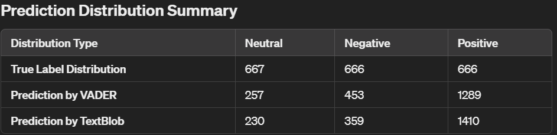

This project identifies the tone of a sentiment based on a product review by using Lexicon (VADER and Texblob). It predicted a good accuracy of analysing the sentiment but we further
improve it by using Machine Learning Models and got even more better accuracy using state-of-the-art Large Language Models also known as LLM.
We begin the process by conducting initial investigation of the dataset sourced from Amazon product review datasets.
There are a total of 602,777 reviews with 12 rows.
Below are the detail data-preprocessing steps that are being conducted:
i. Handle missing values by removing rows that are irrelevant or does not contains any values at all
ii. Removing duplicates as they can skew the model's performance
iii. Removing long messages as they are they are outliers in terms of content length or could be less efficient to process due to their size.
iv. Print the review across all products using 20 bins
A majority of products having a count in the lower review range and a few with significantly higher numbers.
v. Calculate the average number of reviews per product and generate a distribution count
We found out that there is a significant disparity in the number of reviews per product, with an average of 47.44 reviews but a high variance,
ranging from a single review for some products to 2040 reviews for the most-reviewed product. This indicates a skewed distribution where a few products
have a majority of the reviews, which could influence the analysis if not addressed.
vi. Count the number of reviews per user
The results depicts a highly skewed distribution where a small number of users have posted a disproportionately large number of reviews,
while the vast majority have posted far fewer, suggesting a potential user engagement imbalance in the dataset.
Since the datasets consisted of more than 600,000 reviews and due to the limitation of available computing power in the moment,
we only chose to process on 2000 reviews and made sure that there is an equal ditribution amongst all ratings.
vii. Print a descriptive statistics of review lengths to give more insights on the data after sampling
 viii. Generate boxplots and histograms for outlier detection
ix. Labeling the data as Positive, Neutral and Negative for sentiment analysis
x. Perform further pre-processing (only applicable for Lexicon models):
lowercasing, removing punctuations, removing stopwords, tokenizations. Note: Tokenization is not needed explicitly for TextBlob
viii. Generate boxplots and histograms for outlier detection
ix. Labeling the data as Positive, Neutral and Negative for sentiment analysis
x. Perform further pre-processing (only applicable for Lexicon models):
lowercasing, removing punctuations, removing stopwords, tokenizations. Note: Tokenization is not needed explicitly for TextBlob
The pre-processed data is then fed to the models and a comparison of their results is printed.
- For Lexicon models:

- VADER (Raw) shows the highest accuracy, indicating better overall performance in classifying the correct sentiments based on raw text.
- Similarly, VADER (Raw) achieves the highest precision, suggesting it is more reliable in the proportion of true positive identifications.
- VADER (Raw) also leads in recall, which means it is effective at identifying all relevant instances.
- Reflecting a balance between precision and recall, VADER (Raw) again reports the highest score, indicating strong overall performance.
- For Machine Learning models:
- Logistic Regression and SVM exhibit similar performances with SVM slightly leading. Both models demonstrate a better ability to predict Positive sentiments
accurately, reflecting higher precision and recall for positive reviews.
- The machine learning models outperform the lexicon-based sentiment analysis tools in terms of overall accuracy and other metrics.
For Large Language Models:

- LLM (GPT-2) achieves the highest accuracy, indicating superior performance in classifying the correct sentiments based on raw text.
- LLM (GPT-2) also leads in precision, suggesting it is more reliable in the proportion of true positive identifications.
- LLM (GPT-2) also reports the highest recall, which means it is effective at identifying all relevant instances.
- Reflecting a balance between precision and recall, LLM (GPT-2) again reports the highest score, indicating strong overall performance.